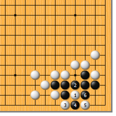
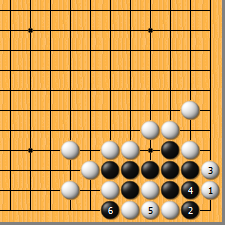
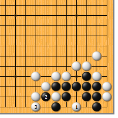
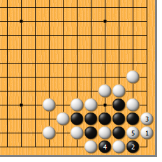
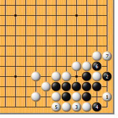
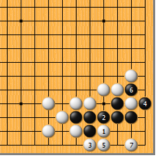
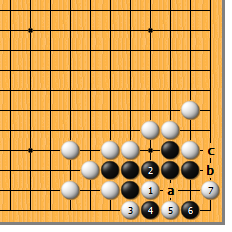

|  |  | |
| 图1 白1夹，先从这边动手，好。黑2如粘，白3当然渡过。黑4扑，也是有想法的，如果于6位单打，白4位粘，黑简单不行。白5提，黑6打后……
| 图2 白1先点，是白颇引以为豪的妙手！黑2如打，白3拉回，如果黑4粘，白5也粘，让黑6提……
| |
|  |  | |
图3 看上去象是“三眼两做”的样子，然而白1点，黑2提时，白3立，黑居然做不出眼！（胸也太闷了吧？） | 图4 前图白1、3拉回时，黑4如果马上提怎么样？这样的话，白5卡，黑也不活。
| |
|  |  | |
图5 马上就有人跳出来了：“白1点时，黑哪有那么老实，不会2位打吗？”对此，白要小心。白3粘，是冷静的好手！黑4打，白5就粘上，黑6提时，白7立！（黑：“大哥，让我换种死法好不好？”）
| 图6 白1、3渡过时，黑4如果先打，白也要仔细计算。白5粘，是此时冷静的好手，逼着黑6提，白7再跳，黑无论如何做不出第二个眼来。
| |
|  | 您的高见 | |
图7 白1、3渡过，黑4扑，白5提后，黑6夹，对白又是一次考验。白7点，不为所动，以后，黑a则白b；黑c则白4，还原到正解图。此题较难，能事先算清所有变化者，有业余5段的实力。 |